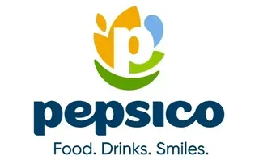

Dirige juntas, presenta y negocia con seguridad.
Inglés 1 a 1
para líderes.
Clases en vivo con un profesor solo para ti, enfocadas en tu puesto y tu industria. A tu horario.
Quiero mi llamada de diagnósticoEn 20min.Medimos tu nivel realPropuesta a tu medida
+1,000ejecutivos
+100empresas
+20años de experiencia

Entiendes casi todo en la junta. Sabes lo que quieres decir.
Pero mientras armas la frase, la conversación ya cambió de tema.
No es que no sepas inglés. Es que lo aprendiste para un examen, no para dirigir una junta.
Lo que vas a lograr.
Presentar resultados ante directivos extranjeros
↗Negociar en inglés sin ceder por falta de palabras
↗Escribir correos claros a la primera
↗Dejar de traducir mentalmente
↗¿Cómo funciona?
Llamada de diagnóstico.
Conocemos tu perfil y medimos tu nivel.
Plan a tu medida.
Basado en tu puesto, no en un libro.
Sesiones 1 a 1.
En vivo, a tu horario, con seguimiento de tu avance.
En 20 minutos,
tendrás claridad.
Una llamada sin costo y sin compromiso para entender qué necesitas y cómo avanzar.
Agendar mi llamada de diagnósticoEn la llamada:
- ✓
Platicamos de tu puesto y en qué momentos usas el inglés.
- ✓
Medimos tu nivel real.
- ✓
Te decimos qué te falta y cuánto tiempo te tomaría.
- ✓
Te presentamos una propuesta a tu medida.
El cambio se nota
al comunicar.
Lo que comparten quienes ya vivieron el proceso One on One.
“
Se abrieron las puertas y la oportunidad de formar parte de equipos de trabajo con extranjeros. He incrementado notablemente mi vocabulario y la confianza de la conversación e interacción en inglés.
Vero CoronaMarketing Manager
“
Ha sido el único proveedor que mantiene motivado y con aprendizaje continuo a mi equipo directivo.
Liliana PadillaRecursos Humanos
“
Lo recomiendo ampliamente. Me dio excelentes resultados para hacer un Máster en el extranjero.
Carmen GonzálezGrupo Azul Reflex
¿Por qué One on One?
Solo tú y tu profesor.
No hay grupos ni apps.
Tu trabajo es el temario.
Practicas tus juntas, tus presentaciones y tus negociaciones.
Profesores certificados por Cambridge.
Con experiencia corporativa y atención personalizada.
Horario flexible.
Si se mueve tu agenda, se mueve tu clase.
¿Es para ti?
Si usas el inglés en juntas, presentaciones o negociaciones.
Si buscas clases para niños, gramática o solo pasar un examen.
Preguntas
frecuentes.
Todo lo que necesitas saber antes de dar el siguiente paso.
1. ¿Cuánto dura el programa?+
Depende del rol y del objetivo. La mayoría de las empresas implementan programas de entre 3 y 6 meses para asegurar cambios sólidos en el desempeño comunicativo, no solo en el nivel de inglés.
2. ¿Cómo se mide el avance?+
Medimos el avance en función de cómo se desempeña la persona en su trabajo, sin exámenes:
- Claridad al explicar información
- Precisión al reportar y presentar
- Seguridad al hablar en juntas
- Capacidad para responder preguntas complejas
- Consistencia al comunicarse con equipos de otros países
Todo esto se traduce en reportes claros para RH y Dirección.
3. ¿Se puede personalizar por área?+
Sí. El programa se diseña por puesto y área: Operaciones, Compras, Ventas, Finanzas, RH, Calidad, Ingeniería, Comercial, etc. Cada grupo o persona trabaja con situaciones reales de su función.
4. ¿Qué pasa si alguien tiene un nivel bajo de inglés?+
No es un programa escolar. Incluso si el nivel es bajo, se trabaja para que la persona pueda cumplir con tareas específicas de su rol en inglés: explicar algo sencillo, dar seguimiento, responder lo básico con claridad, etc. Cada grupo o persona trabaja con situaciones reales de su función.
5. ¿Es individual o grupal?+
Tenemos tres formatos:
- Programa Ejecutivo 1:1
- Programa Mini grupo
- Programa Team
La elección depende de la estructura y prioridades de la empresa.
6. ¿En qué se diferencia de un curso de inglés tradicional?+
Un curso tradicional enseña inglés en general. Este programa entrena a tu gente para trabajar en inglés:
- Reportar
- Presentar
- Justificar decisiones
- Coordinarse con otros países
- Explicar cambios y procesos
7. ¿Se adapta a la agenda de los Directivos?+
Sí. El programa está diseñado para personas con agendas complicadas: Directivos, Gerencias, Coordinadores y Líderes de área.
8. ¿Cómo reciben la información RH y Dirección?+
Se entregan reportes periódicos con:
- Avance por participante
- Observaciones por área
- Fortalezas y puntos a mejorar
- Recomendaciones concretas para la empresa
9. ¿Pueden preparar a alguien para una presentación o junta crítica?+
Sí. Uno de los usos más frecuentes es preparar a Directivos y Líderes para:
- Juntas con corporativos
- Presentaciones de resultados
- Auditorías
- Comités
- Reuniones con inversionistas o socios internacionales
10. ¿El programa es online o presencial?+
El programa está diseñado para trabajarse 100% online, ideal para equipos distribuidos o con agendas ajustadas.
Que tu inglés esté
a la altura de tu puesto.
Agenda tu llamada de diagnóstico sin compromiso.
Agendar mi llamada de diagnóstico